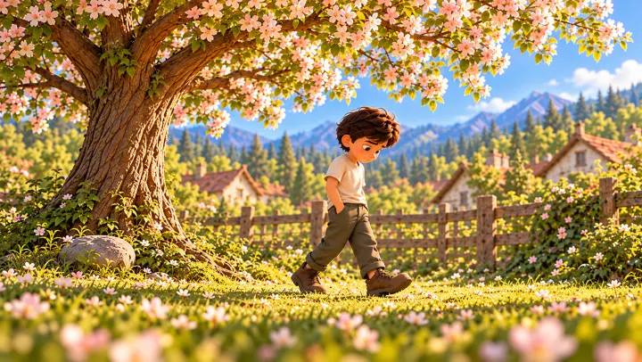
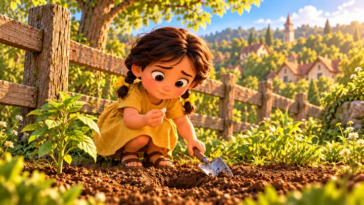
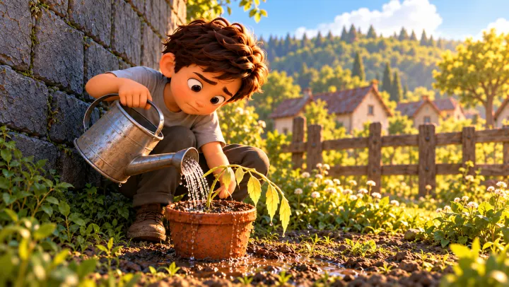
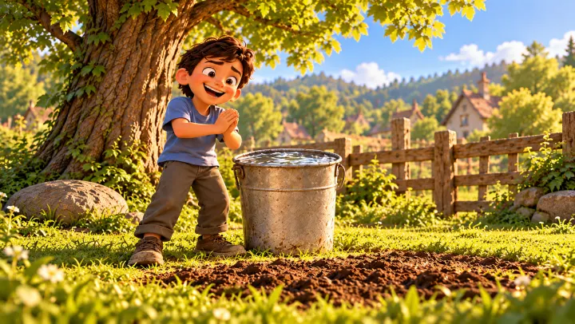
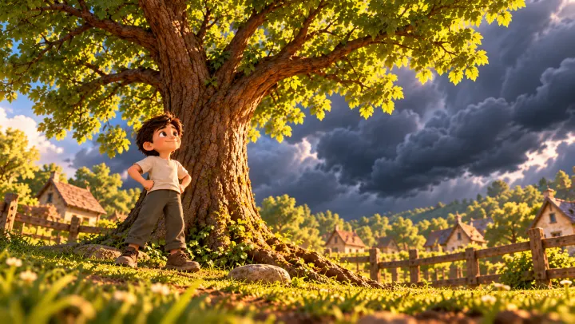
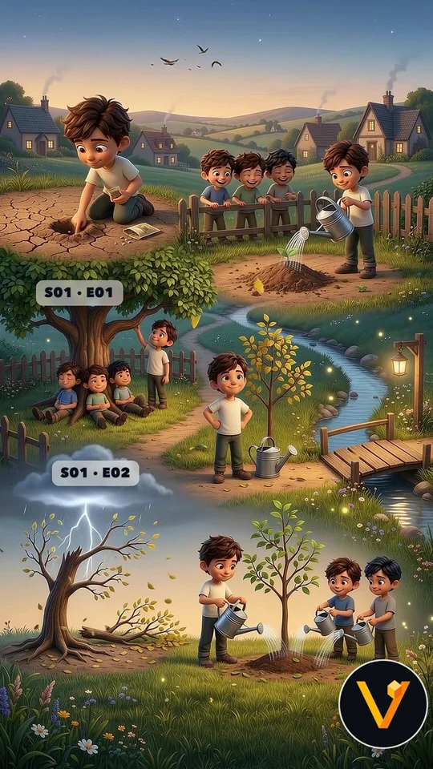
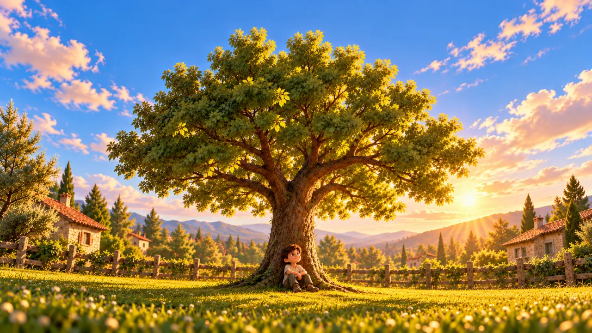
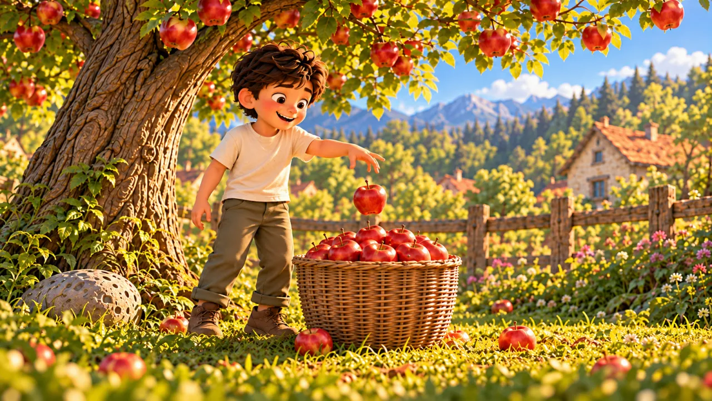
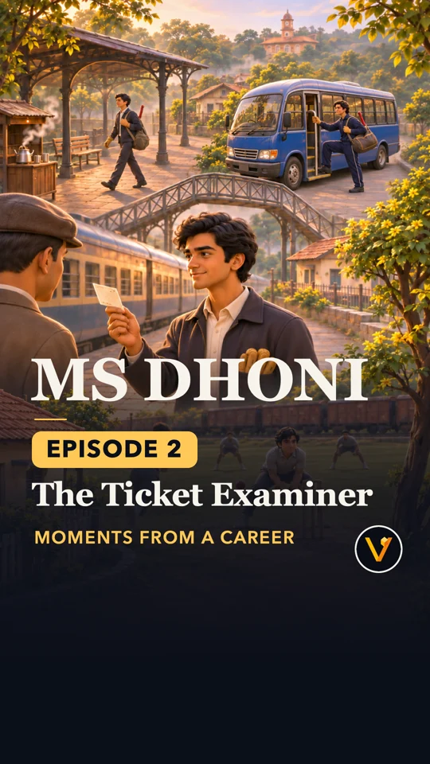

Wordless short
Parathas in the Monsoon
Rain pours over a Himachali hillside home while a family cooks hot parathas over the chulha. A wordless short with rain, fire and kitchen sounds.
Little stories about big habits, pivotal moments, and quiet dedication.
बड़ी आदतों की छोटी कहानियाँ, एक मिनट से कम में।
Short animated stories from Grow Slow (patience and compounding habits), MS Dhoni (the small moments that made a champion), and Before the Spark (how iconic innovators began). Watch Hindi stories and wordless shorts on Spark VertoByte.
Rain pours over a Himachali hillside home while a family cooks hot parathas over the chulha. A wordless short with rain, fire and kitchen sounds.
Upload times are flexible; new stories arrive as each chapter is completed. Browse all 11 uploaded Grow Slow episodes below or filter by season.
Grow Slow S02E03
Accepting criticism: not everything that stings is against you.
Accepting criticism: not everything that stings is against you.

S02E02Staying present and grounded when initial signs of success and growth appear.
The comparison trap: why measuring your slow growth against fast blooms leads astray.
Season 1 finale: tackling bad habits, doubts, and weeds while they are still small.

S01E07Trusting the invisible work under the soil instead of constantly digging to check.

S01E06Reaching toward whatever sunlight is available, even when surrounded by shade.
Planting multiple efforts and embracing quiet compounding over time.

S01E04The compounding power of small daily hydration versus erratic floods of effort.
Protecting quiet beginnings and having faith before anyone else sees results.

S01E02Building anchor strength in the dark soil so you can withstand future winds.
The series premiere: starting the journey with dry soil, one seed, and a single drop.

Six miniature scenes from One Small Step and Deep Roots come to life in a short preview.
Grow Slow explores character growth through distinct seasons. Explore the released arcs below.

Complete (8 Episodes)Grow Slow Season 1: Before the First Leaf
Eight tiny stories for anyone who is doing the work before anyone can see it working. The complete first arc is available in Hindi.

In Progress (3 Episodes Released)Grow Slow Season 2: When the Fruit Comes
Stories about what comes after the wait: the first flowers, the first fruit and staying grounded. Season 2 is currently releasing.
वो छोटे पल जिन्होंने एक champion बनाया, हर कहानी में एक सीख।
The small moments that made a champion, one takeaway per story.
 S01E01
S01E01Before MS Dhoni was a wicketkeeper, he was a football goalkeeper at his school in Ranchi. His coach saw him diving between the posts and asked him to try wicketkeeping. The reflexes were already there—they just needed the right pitch.

S01E02A railway job gave Dhoni a place on a cricket team. He kept playing alongside his day job until India A picked him.
मशहूर लोगों ने शुरुआत कैसे की।
How well-known builders began.
 S01E01
S01E01At 15, years before co-founding Nvidia, Jensen Huang washed dishes and cleaned tables at Denny's. He resolved to be the best dishwasher they ever had, learning that greatness starts with total dedication to humble tasks.
Created for thoughtful viewing wherever you are.
Each episode stands on its own on YouTube Shorts and Instagram Reels.
Follow the narrated stories in Hindi or listen to the rain and kitchen sounds in Parathas in the Monsoon.
From quiet patience in Grow Slow to champion mindset in MS Dhoni, the narrated series follow a moment that changes what a character does next.
VertoByte is a creative-technology venture started in 2026. Spark VertoByte is its first product.
Founder, VertoByte
India
Vishal Dhiman is a software and applied-AI engineer with more than seven years of experience building and leading production systems. He started VertoByte to practise the same discipline in public: take each story from script to storyboard, pictures, narration and upload, and say plainly which parts are made with AI.
Watch and subscribe on YouTube, or follow on Instagram for instant notifications when new stories drop.
Hindi stories and wordless shorts.
Reels from Spark VertoByte.
Made with AI, and we say so. Our illustrations and narrated audio are made with AI tools. We label uploads on YouTube and Instagram. This is an independent channel not affiliated with any featured individuals.
Spark VertoByte is the first product of VertoByte, an independent creative-technology venture founded by Vishal Dhiman in 2026. You can find the founder on LinkedIn from the Behind VertoByte section on this page.
Spark VertoByte produces three complementary short-story series: 'Grow Slow' (lessons on patience, humility, and compounding habits), 'MS Dhoni: Moments That Made a Champion' (defining early decisions that forged a champion, one takeaway per story), and 'Before the Spark' (how iconic founders and leaders began from humble work).
The MS Dhoni series focuses on the small, pivotal moments that made Mahendra Singh Dhoni a champion. 'The Boy in Goal' and 'The Ticket Examiner' are available in Hindi on Spark VertoByte.
Video upload times are not fixed to a rigid clock or calendar schedule. New episodes are released as each short is finished. Subscribe on YouTube and follow on Instagram to get notified instantly whenever a new story drops.
Each short stands on its own. However, stories within the same season build on each other, so you can follow the season from its first episode.
Narrated episodes on Spark VertoByte are in Hindi. Parathas in the Monsoon is wordless and uses rain and kitchen sounds.
Yes. The pictures and narration are created with AI tools, and every upload carries the AI-generated label on YouTube and Instagram. This is an independent channel.